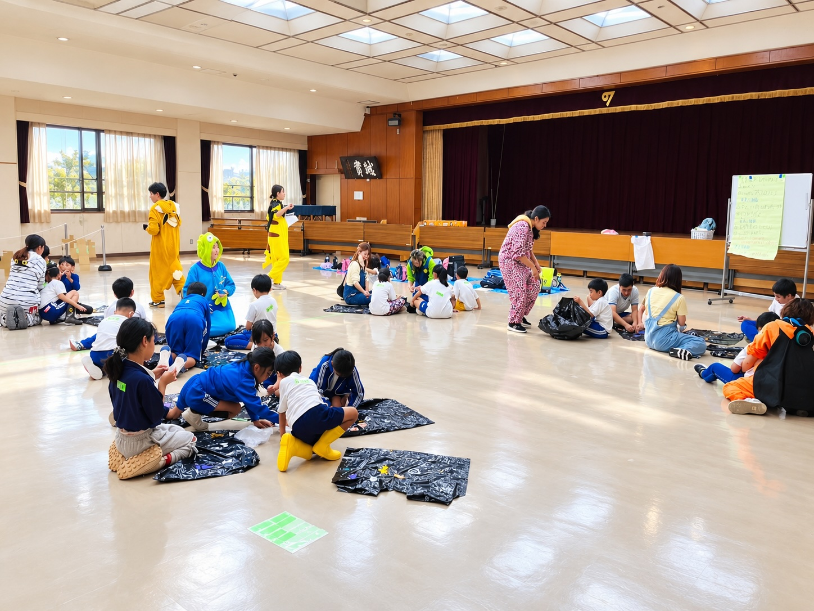

領域 1健康と生活
- 定期的な心身の把握
- 生活リズムの安定（定時的かつ定時に通所）
- 本人の小さな異変に気付けるように細心の注意を払い、安全に過ごせるようケアを行う
- 楽しく食事できるよう、咀嚼、嚥下、姿勢保持、自助具等に関する支援を行う
- 生活の中で、様々な遊びを通して学習できるよう環境を整える。また、障害の特性に配慮し、時間や空間を本人に分かりやすく構造化する
支援プログラムSUPPORT PROGRAM
かみのてKIDS・かみのてSMILE 共通の支援プログラムです。国が定める5つの領域にもとづいて、活動の内容をまとめています。

かみのてKIDS、かみのてSMILEでは5領域に基づく
以下の支援プログラムを組み合わせた活動を行います。